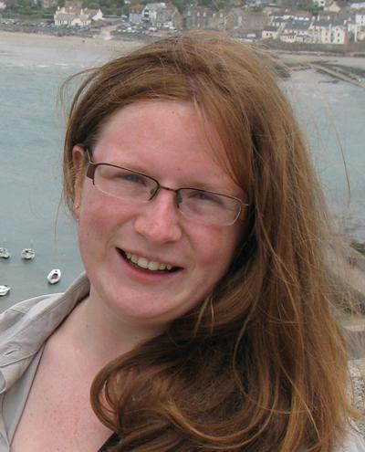

The Group
Our group collaborates with colleagues across Exeter's Earth
Systems
Science and Geography disciplines, the Met Office Hadley
Centre and the
Centre for Environment, Fisheries and Aquaculture Science
Dr Paul Halloran (Group Leader)
Paul’s primary
research interests focus on understanding the role of
the marine carbon cycle within the Earth system. His
multi-disciplinary
background allows this to be tacked in a novel way. Paul’s
degree and
PhD were in the Department of Earth Sciences in Oxford, where
working
with Ros Rickaby, he examined ENSO change over the Pliocene,
developed
novel geochemical climate proxy techniques, and investigated
the impact
of ocean acidification on calcifying phytoplankton. After his
PhD Paul
moved to the Met Office Hadley Centre as a scientist, then
senior
scientist in ocean biogeochemical modeling. In the Hadley
Centre Paul
was heavily involved in the development, validation and
application of
the Earth System Model HadGEM2-ES. Working with this model,
Paul and
colleagues investigated the mechanisms behind novel
biogeochemical
climate feedbacks, the role of anthropogenic aerosols in
recent climate
change, reversibility in the earth system and more. In 2013
Paul took
up a lectureship in the School of Geography, University of
Exeter,
becoming a senior lecturer in 2016,
where he is working to unite past and future climate research
to help
improve our understanding of the Earth system.
Sarah Holmes (PhD Student)
Sarah has just accepted a NERC CASE (with Cefas) funded PhD studentship to work on an exciting project which will bring together annually resolved palaeoclimate reconstructions from bivalves with shelf-sea modelling. The project aims to deliver new understanding about the climate drivers of ecosystem change in the North West European shelf seas. Sarah's undergraduate dissertation project, based in Exeter, but working closely with colleagues in Bangor, produced a novel 99 year Glycymeris glycymeris chronology from the English Channel.
Freya Garry (PDRA)
Freya is working between Exeter and
the Met Office on the
NERC funded CLAM (Climate of the Last Millennium) project.
Freya will be analysising CMIP5
simulations and performing new HadGEM3 simulations to
test
hypotheses of the drivers of decadal and longer Atlantic
surface
circulation variability, and by doing so understand exciting
new
annually resolved seawater temperature and salinity
resconstructions
spanning the last millenium.
Jen McWhorter (PhD student)
Jen
is a
PhD student with an Exeter-Queensland scholarship (supervised
by Pete
Mumby in Queensland) to work on downscaling global climate and
biogeochemical model data to the costal ocean to drive novel
coral reef
projections.
George Manville (PhD Student)
We
have recently appointed a PhD student to work on Southern
Ocean marine trace gasses and climate, joint with the Met
Office.
Co-supervised Students:
Gen Hinde
Gen
is a NERC GW4+ funded PhD student working on a PhD led by Dr
Marie-Jose
Messias and the ocean tracers team. Her project will use
transient
tracers observations to investigate the uptake of heat and CO2
by the
Southern Ocean.
Gen graduated with an MSci Oceanography from the University of
Southampton in 2017 with a year spent abroad at the University
of
Washington, Seattle. Whilst in Seattle she took part in a
student
research cruise to Vancouver Island and collected data within
Nootka
Sound, a fjord system. She used this data to produce a thesis
looking
at the influence of coastal upwelling on the surface CO2 flux
within
the fjords. Once back in Southampton Gen completed her final
year
project looking at methods to detect subsurface meltwater
outflows from
Antarctic ice shelves.
Aimee Coggins
Aimee
is a Royal Society funded PhD student working on the Southern
Ocean carbon cycle, lead supervisor Andy Watson.
Alumni:
Alice Lebehot (PhD Student)
Alice Lebehot (Lead supervison, Paul Halloran, co-supervisors, Andy Watson, Doug McNeall, Ute Schuster). Moved to Capetown to work with Pedro Monteiro. Alice worked on the RAGNARoCC project. Her work aims to understand how, and how well, Earth System models simulate observed North Atlantic pCO2 variability, to help constrain our confidence in model projections of future CO2 uptake. Numerous observational campaigns and data from ships of opportunity over the past two decades have lead to the suggestion that modes of climate variability (NAO and AMO) dominate recent N. Atlantic air-sea CO2 flux changes (Thomas et al, 2008, Watson et al, 2009). Links between air-sea CO2 flux and the NAO and AMO, if robust, are extremely valuable because they allow mechanisms for changing CO2 uptake, verified in the real world, to be considered in the context of past and future natural and anthropogenic forcing. As promising as these relationships may seem, the observational CO2 air-sea flux record spans less that one full cycle of the NAO‘s, and less than half a cycle of the AMO’s multi-decadal variability, and therefore our confidence in these relationships is very limited. We must therefore look to carefully validated models to extend our observational understanding and place observed changes in a future context. Alice also worked with us for 6 months on the NERC CURBCO2 project.
Lester Kwiatkowski (Lead supervisor, Peter Cox). Moved to work as PDRA in Stanford with Ken Caldera and is now at IPSL working with Laurent Bopp in France.
Matthew Couldrey (Lead supervisor, Kevin Oliver, Southampton). Moved to work as PDRA with Jonathan Gregory in Reading.
Tobia Tudino. Tobia completed a 6 month contract with
us after his PhD to work on the CurbCO2 project.